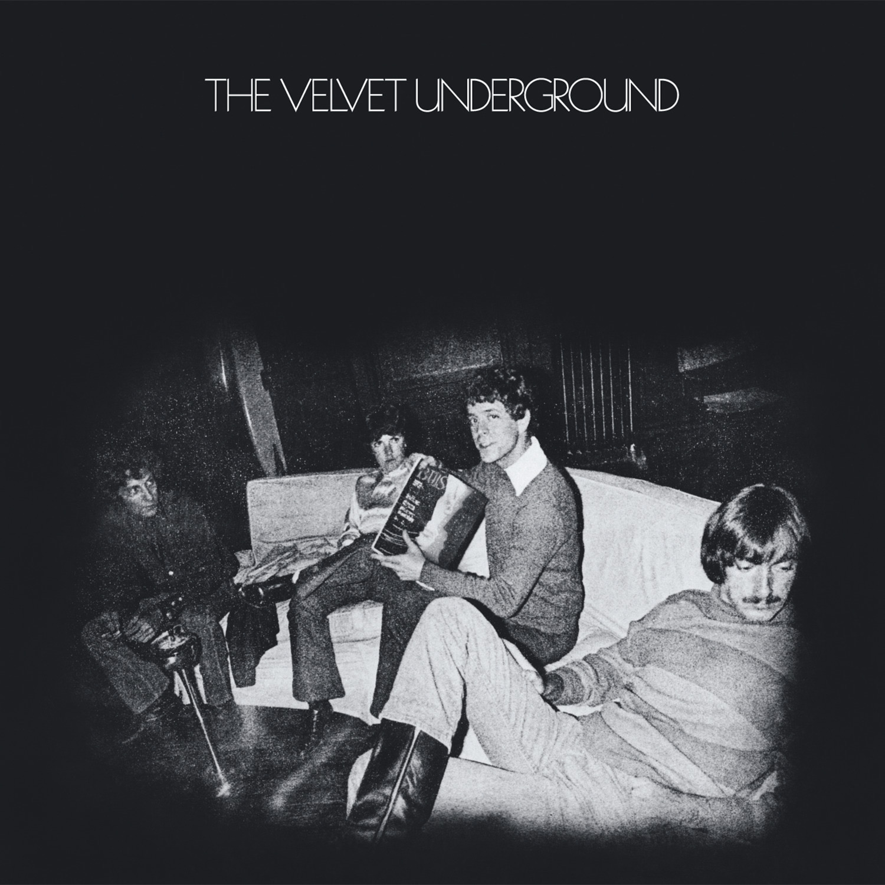

Day 41

The Velvet Underground - Pale Blue Eyes - The Velvet Underground - 1969
歌词太神，对肆意妄为的女人无可奈何的心情描述地淋漓尽致。作者太懂了吧……
Sometimes I feel so happy Sometimes I feel so sad Sometimes I feel so happy But mostly you just make me mad Baby, you just make me mad Linger on your pale blue eyes Linger on your pale blue eyes Thought of you as my mountaintop Thought of you as my peak Thought of you as everything I've had, but couldn't keep I've had, but couldn't keep Linger on your pale blue eyes Linger on your pale blue eyes If I could make the world as pure And strange as what I see I'd put you in a mirror I put in front of me I put in front of me Linger on your pale blue eyes Linger on your pale blue eyes Skip a life completely Stuff it in a cup She said "money is like us in time It lies, but can't stand up" Down for you is up Linger on your pale blue eyes Linger on your pale blue eyes It was good what we did yesterday And I'd do it once again The fact that you are married Only proves you're my best friend But it's truly, truly a sin Linger on your pale blue eyes Linger on your pale blue eyes